Quick start
$ brew tap chmouel/lazyworktree https://github.com/chmouel/lazyworktree
$ brew install lazyworktree --cask
$ cd your-repository
$ lazyworktree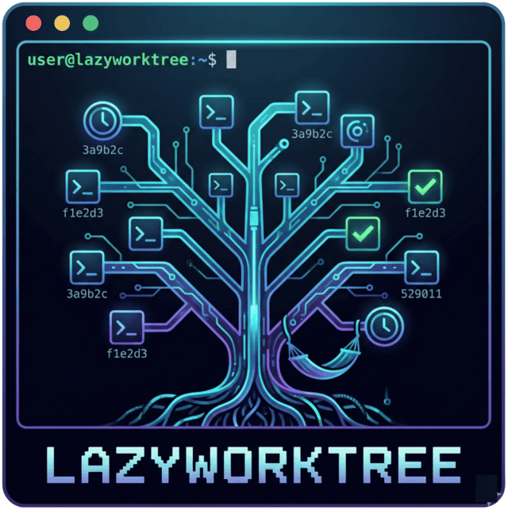
lazyworktreeA TUI for git worktrees
LazyWorktree is a keyboard-first TUI for managing Git worktrees, branches, pull requests, and CI status. Each task gets its own worktree, so you never switch branches in a shared directory: tmux or zellij sessions, notes, TODO items, and uncommitted changes stay where you left them.
Quick start
$ brew tap chmouel/lazyworktree https://github.com/chmouel/lazyworktree
$ brew install lazyworktree --cask
$ cd your-repository
$ lazyworktree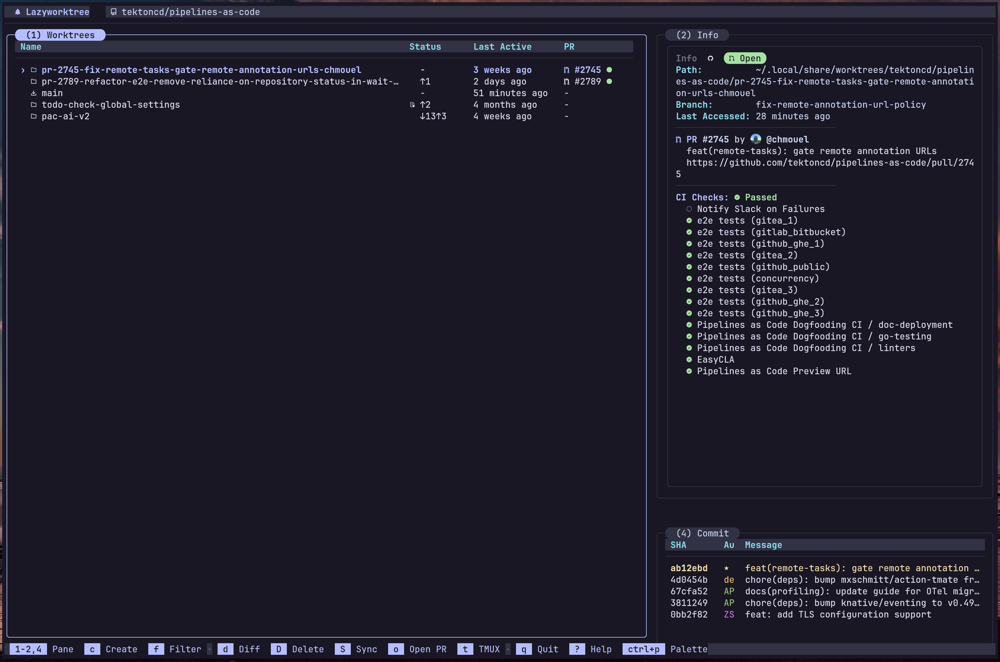
Features
Create, rename, remove, absorb, and prune merged worktrees directly from the keyboard.
Worktrees become the centre of your development cycle instead of branch checkouts in one directory. Terminal sessions, local notes, and Git state stay anchored to the worktree you're in.
Create from branch, commit, PR/MR, issue, or custom menu item with optional branch automation.
Start a new environment from any git reference without checking out branches or fetching commits by hand.
Stage, commit, diff, push, sync, and cherry-pick -- all from within the TUI.
Daily git tasks run inside the app. When you need more, press
G to jump into
lazygit.
See check status, read logs, open job pages, and restart GitHub Actions runs.
CI pipelines sit alongside your code, so you can see whether tests passed without opening a browser.
Each worktree can get its own tmux or zellij session, with configurable prefixes.
Terminal multiplexers keep each worktree's workspace state separate.
Run init and terminate hooks via .wt and add custom
command bindings.
Run setup and teardown tasks for every worktree you create or delete.
npm install or
go mod download on creation.
Attach markdown notes to any worktree and view them rendered in the info pane.
Attach a scratchpad to each worktree so you remember where you left off.
Turn markdown checkbox notes into a grouped Taskboard and toggle progress without leaving the TUI.
Markdown checkboxes in your notes become an interactive taskboard.
- [ ] Task syntax in your worktree notes.
Set options via CLI flags, git config, or a YAML file. Local settings override global ones.
Three levels of settings: global config, per-repository overrides, and CLI flags. More specific wins.
~/.config/lazyworktree/config.yml.
Install
brew tap chmouel/lazyworktree https://github.com/chmouel/lazyworktree
brew install lazyworktree --caskyay -S lazyworktree-bingo install github.com/chmouel/lazyworktree/cmd/lazyworktree@latest
Optional tools: gh or glab for forge data,
and delta for enhanced diffs.
Screenshots
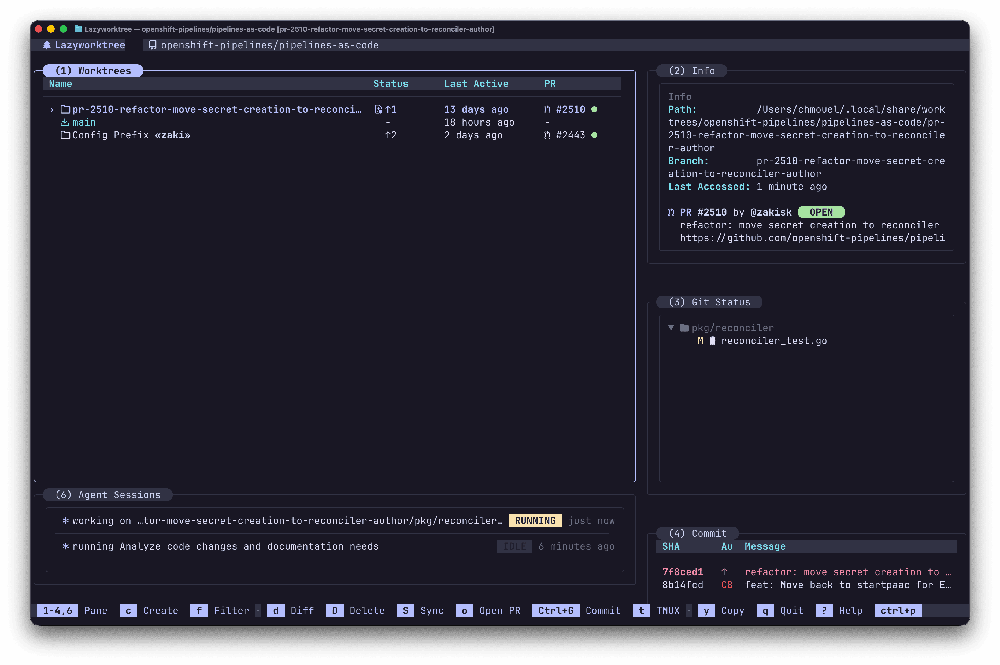
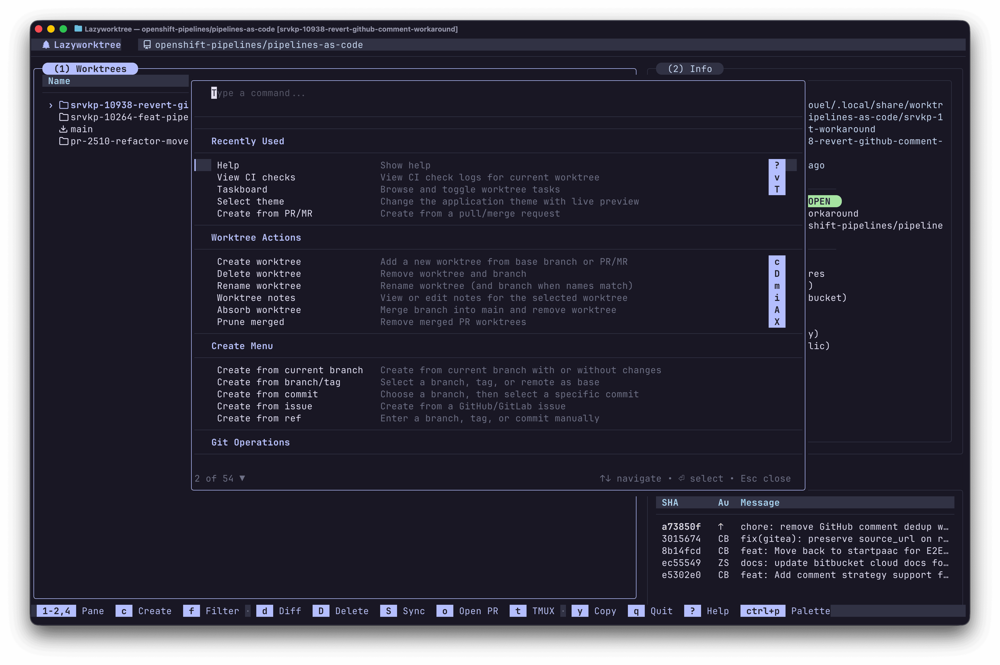
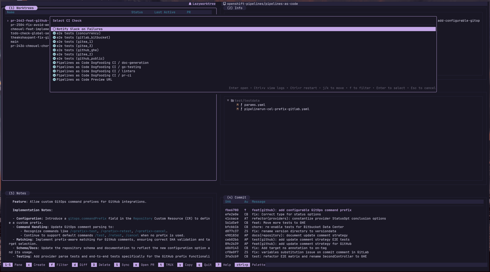
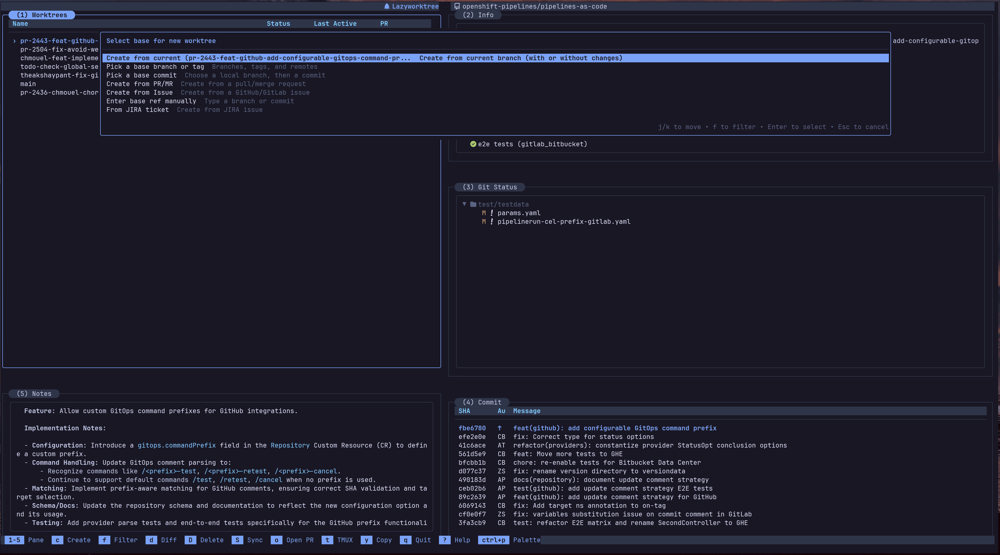
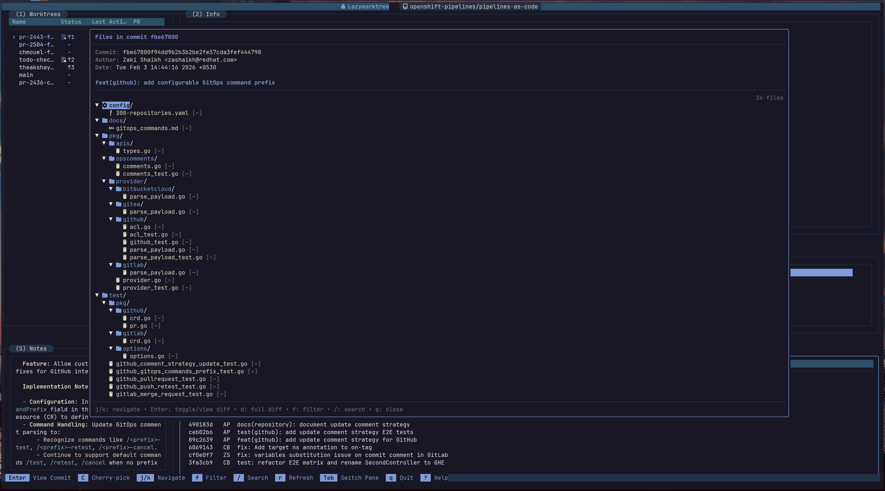
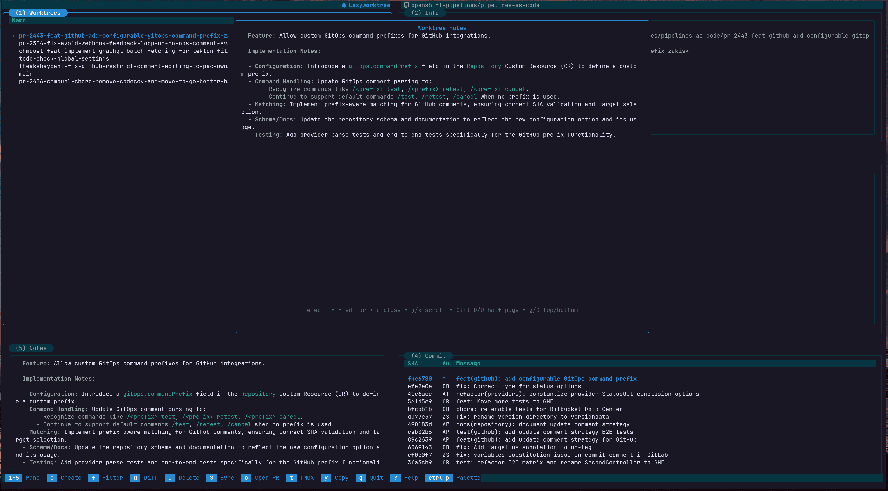
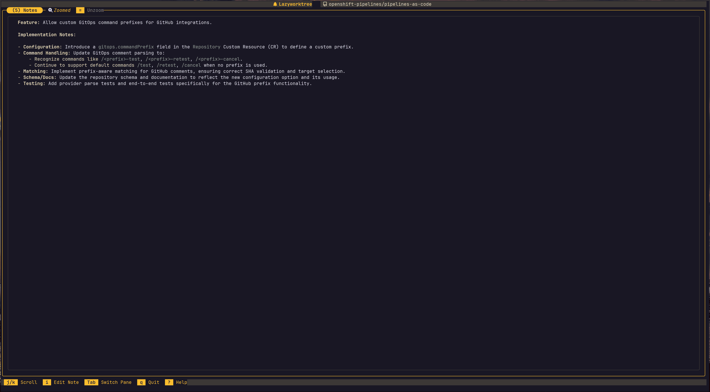
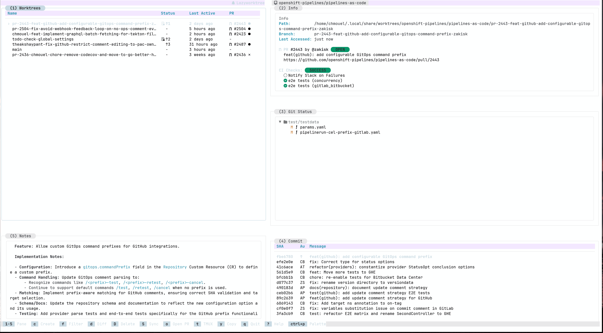
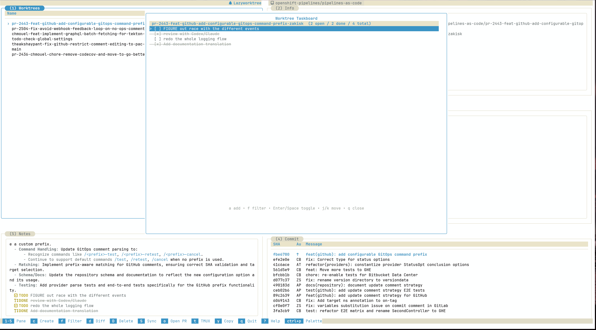
It's open source, installs in seconds, and works with any Git repo that uses worktrees.